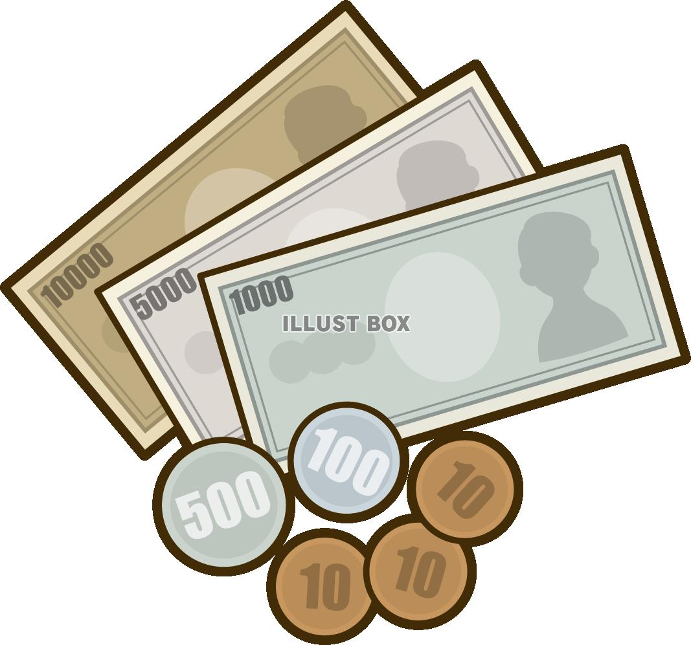
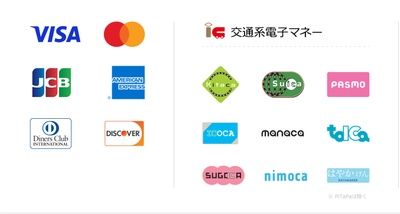

学食基本情報

| 営業時間 | 火,水,金 | 11:45~14:00 |
|---|---|---|
| 月,木 | 12:30~13:50 | |
| 休日 | 閉店 | |
| 営業場所 | 8号館1階 | |
お支払方法について

現金


| 営業時間 | 火,水,金 | 11:45~14:00 |
|---|---|---|
| 月,木 | 12:30~13:50 | |
| 休日 | 閉店 | |
| 営業場所 | 8号館1階 | |

